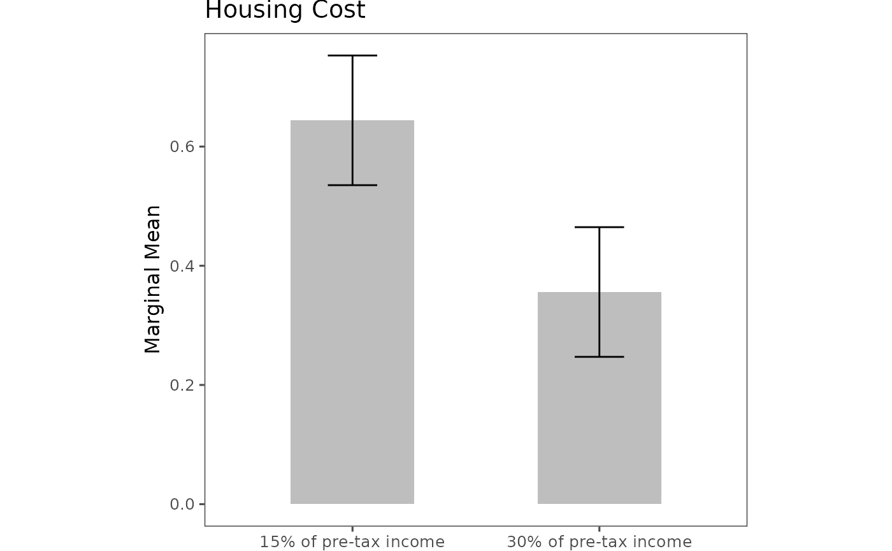

Plot choice-level marginal means (MMs) (helper)
Source:R/plot_projoint_choice_level_mm.R
plot_projoint_choice_level_mm.RdInternal helper used by plot.projoint_results to render
choice-level marginal means (MMs). Supports a bar chart or a horizontal
pointrange layout and optional custom level labels.
Arguments
- x
A
projoint_resultsobject produced byprojointwithstructure = "choice_level"andestimand = "mm".- .type
Character. Either
"bar"(two bars with CIs) or"pointrange"(horizontal estimate with CI and level labels at the extremes). Default"pointrange".- .estimates
Character. Which estimate version to plot:
"corrected"(default) or"uncorrected".- .labels
Optional character vector of length 2 for custom level labels (left/right). If
NULL, labels are derived fromx$labels.- .show_attribute
Logical; if
TRUE(default), add the attribute name as the title when both levels are from the same attribute.- .remove_xaxis
Logical; if
TRUE, remove x-axis line, ticks, and labels (useful when embedding). DefaultFALSE.- .xlim
Numeric length-2 giving the x-axis limits. Default
c(0, 1).- .plot.margin
Numeric vector of plot margins in cm,
c(top, left, bottom, right). Defaultc(1, 2, 1, 2).- ...
Currently unused (reserved for future extensions).
Details
This helper expects that the projoint_results object already
contains a single pair of choice-level MMs (i.e., one att_level_choose
and one att_level_notchoose). It is called internally by
plot.projoint_results when x$structure == "choice_level"
and x$estimand == "mm".
When .type = "pointrange", the level labels are placed just outside
.xlim to avoid overlap with the confidence interval. If the two levels
correspond to different attributes, the attribute title is omitted and a
message is emitted.
See also
plot.projoint_results for the user-facing plot method.
Examples
data(exampleData1)
dat <- reshape_projoint(exampleData1,
.outcomes = c("choice1", "choice2", "choice1_repeated_flipped")
)
att <- unique(dat$labels$attribute_id)[1]
levs <- subset(dat$labels, attribute_id == att)$level_id
lev_names <- sub(".*:", "", levs)
q <- set_qoi("choice_level", "mm",
.att_choose = att, .lev_choose = lev_names[2],
.att_notchoose = att, .lev_notchoose = lev_names[1]
)
fit <- projoint(dat, .qoi = q)
plot(fit)
